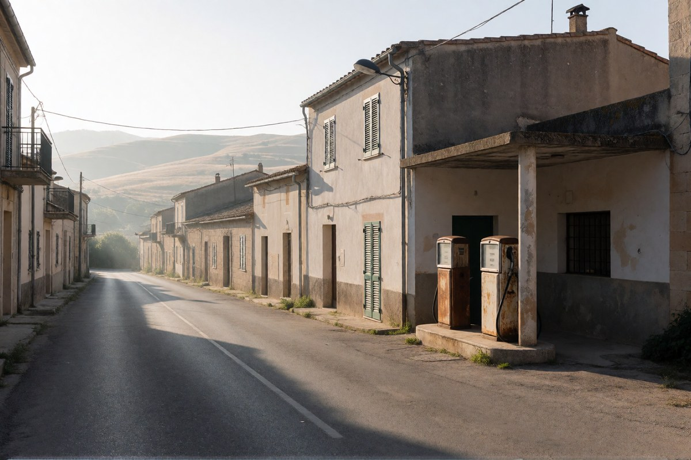

Mafia e antimafia · 21 novembre 2026
Valle del Belice, tre condanne definitive per tentata estorsione

La Cassazione ha dichiarato inammissibili i ricorsi di tre imputati dell'inchiesta Opuntia: la pena più alta è di due anni e sei mesi. Tutto nasce da una denuncia del 2015, quella di un imprenditore originario di Castelvetrano.
di Franco Zanghì
Santa Margherita di Belice e Menfi, in provincia di Agrigento. È il 2015, e un imprenditore originario di Castelvetrano fa una cosa che non è scontata: va dai carabinieri e denuncia.
Racconta, secondo la ricostruzione dell'accusa poi confermata nei gradi di merito, le pressioni che riceve per dimettersi da una società che lavora nel settore dei carburanti e per rinunciare a stipendi, arretrati e benefici legati a un infortunio.
Quella denuncia entra in un'inchiesta antimafia, l'operazione Opuntia, sulle cosche di Menfi e Santa Margherita di Belice. E diventa un processo.
L'ultima parola
Nei giorni scorsi è arrivata la decisione definitiva. La Corte di cassazione ha dichiarato inammissibili i ricorsi di tre imputati, e le loro condanne per tentata estorsione aggravata dal metodo mafioso sono diventate definitive.
La pena più alta è per Pietro Campo, di Santa Margherita di Belice: due anni e sei mesi. Campo è ritenuto dagli investigatori, da anni, ai vertici di Cosa nostra agrigentina. Per Giuseppe Alesi la pena definitiva è di un anno, nove mesi e dieci giorni; per Tommaso Gulotta, di Menfi, di un anno e quattro mesi.
C'è poi un quarto imputato, che oggi collabora con la giustizia. Per lui la Cassazione ha annullato la condanna d'appello, di otto mesi, e ha rimandato gli atti a un'altra sezione della Corte d'appello, che dovrà valutare l'attenuante speciale della collaborazione. La sua posizione, quindi, non è definitiva.
Undici anni
Tanto è passato dalla denuncia ai carabinieri alla sentenza definitiva. Sono tanti, è vero. Ma il vero protagonista di questa storia non ha un nome sui giornali: è un uomo che, davanti alle pressioni, ha scelto di non abbassare la testa. E la sua denuncia è arrivata fino in Cassazione.
Il metodo mafioso, nel codice, è l'aggravante che scatta quando la richiesta non ha bisogno di una pistola: basta far capire chi c'è dietro. È la forma più difficile da provare dell'estorsione, perché si fonda su una minaccia che a volte non viene nemmeno pronunciata. Qui, invece, è stata provata in tre gradi di giudizio.
Il punto
Una denuncia nel 2015, l'operazione Opuntia, un processo. E oggi tre condanne definitive per tentata estorsione aggravata dal metodo mafioso, con la pena più alta a due anni e sei mesi.
E allora la domanda è questa: che cosa serve, secondo te, perché chi subisce pressioni come queste trovi il coraggio di denunciare?
Fonti
- Grandangolo Agrigento, «Tentata estorsione mafiosa nell'Agrigentino: tre condanne, annullata quella a collaboratore di giustizia», 21 novembre 2026
- SiciliaTV, «Tentata estorsione mafiosa: tre condanne diventano definitive», di Nino Ravanà, 21 novembre 2026
- Sicilia24h, «Estorsione mafiosa nella Valle del Belice, tre condanne definitive», 21 novembre 2026
- AgrigentoNotizie, sul primo grado davanti al giudice per l'udienza preliminare di Palermo
- Giornale di Sicilia, «Tentata estorsione nel Belice, confermate in appello le condanne per quattro imputati», 16 novembre 2025
Le fonti consultate non indicano la data della decisione della Corte di cassazione. Il nome dell'imprenditore che ha denunciato non è stato reso pubblico e non viene cercato qui. Il nome del quarto imputato è stato pubblicato dalle testate agrigentine ma non viene riportato, perché la sua condanna è stata annullata e per lui vale la presunzione d'innocenza fino alla decisione definitiva. Nelle fonti consultate non risultano dichiarazioni delle difese. I fatti contestati sono la ricostruzione dell'accusa, confermata nei gradi di merito.
Questo articolo nasce dalla pagina Gli Eroi dell'Abisso, dove la stessa storia è raccontata in video.